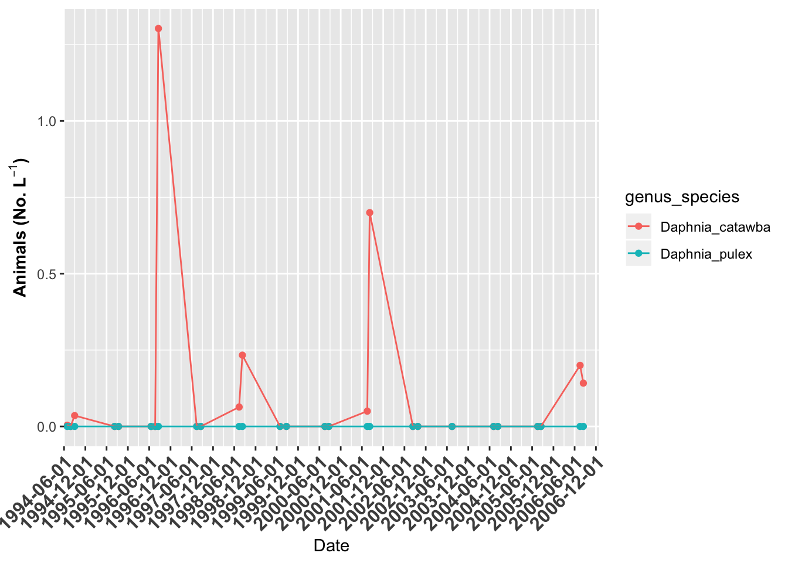
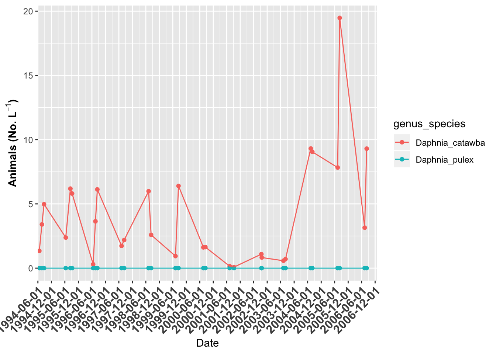
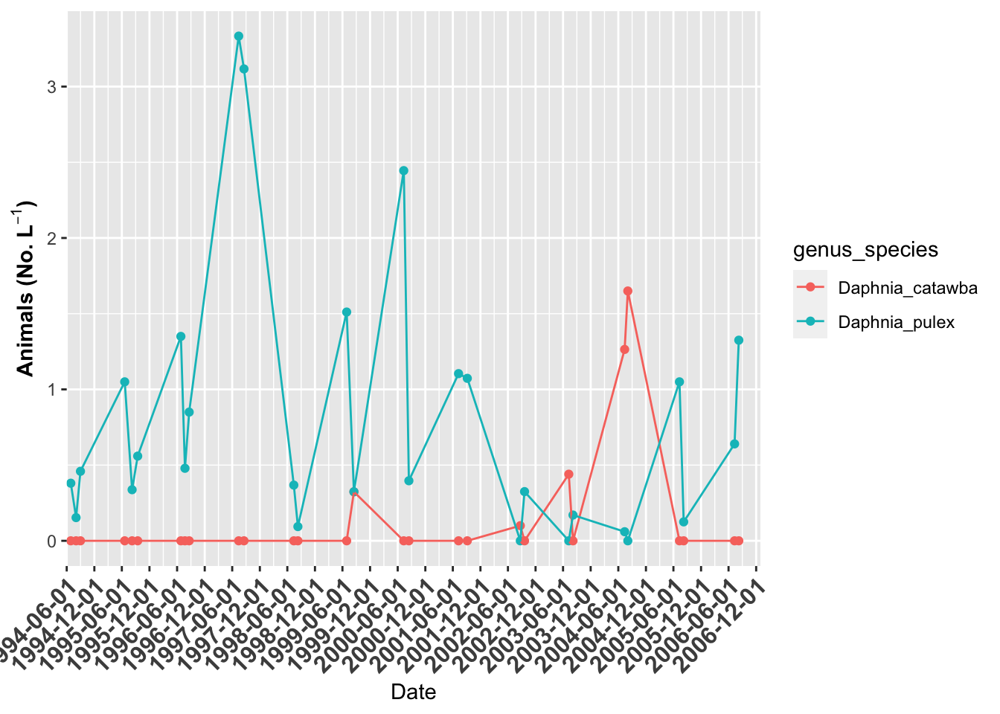
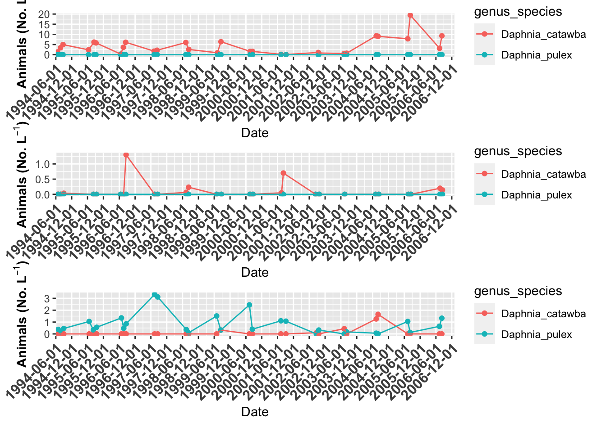
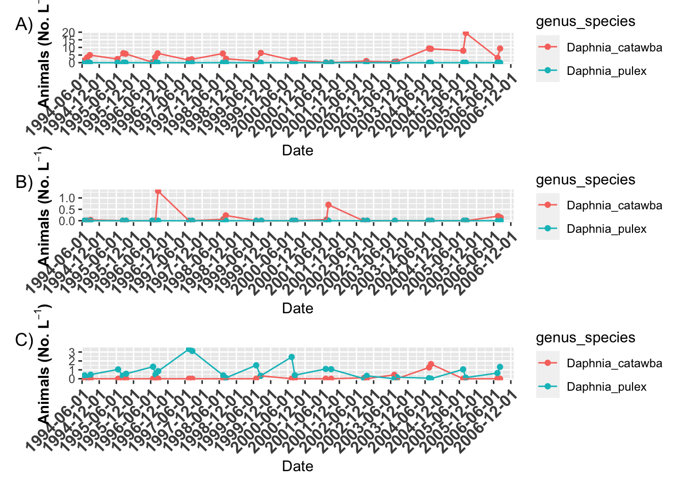
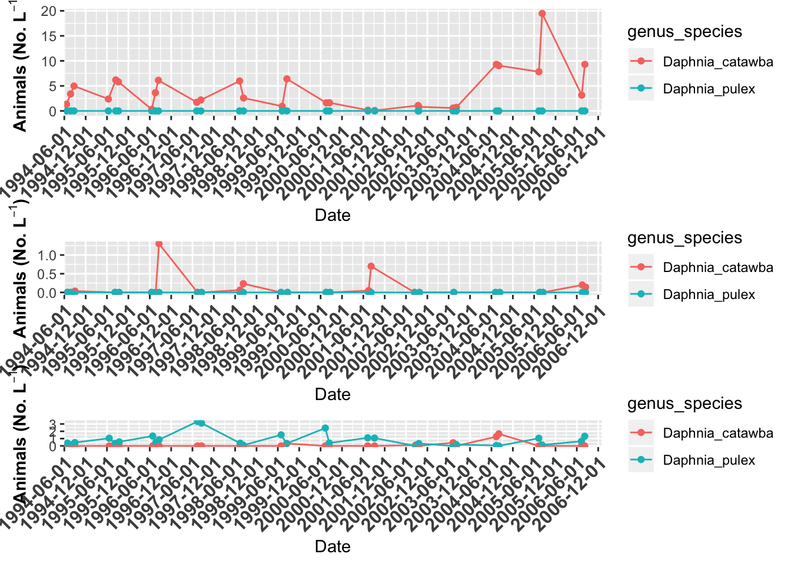
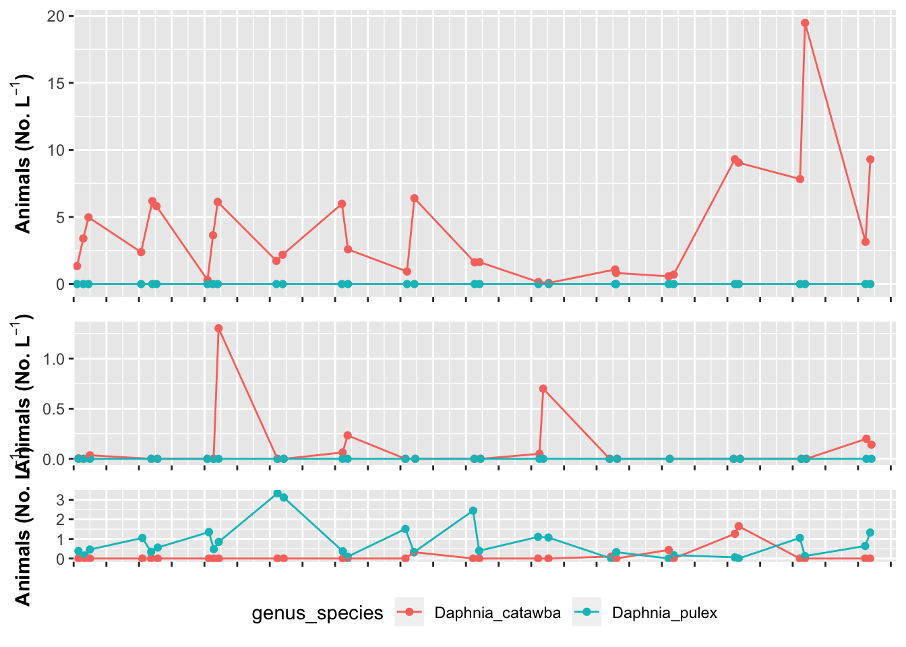
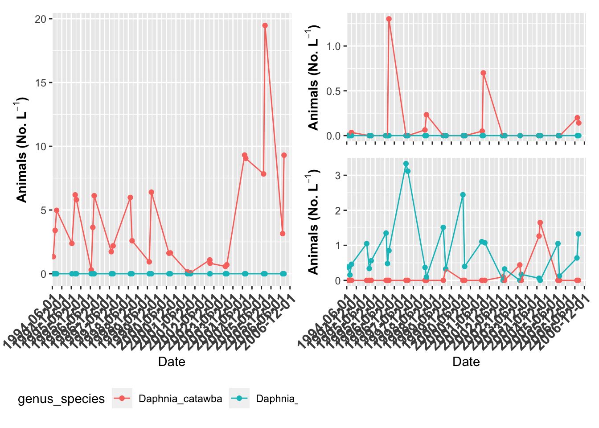
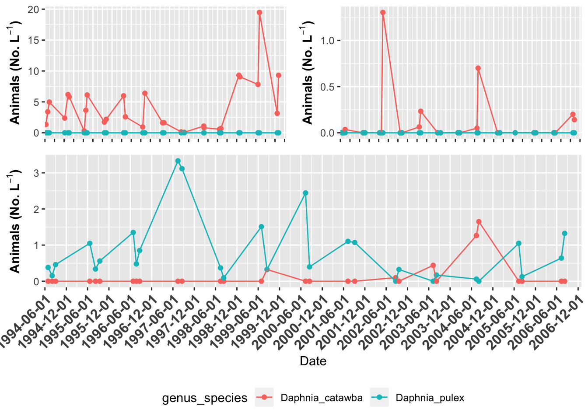

The goal of this slide set is to show you how to make publication ready graphs and expand on what we have done in the basic plotting series. The goal of this is to use GGPlot and later on I will show you how to use patchwork which allows more flexibility in plot layout.
# install.packages("devtools")
# devtools::install_github("thomasp85/patchwork")
# Load Libraries ----
# this is done each time you run a script
library(readxl) # read in excel files
library(tidyverse) # dplyr and piping and ggplot etc
library(lubridate) # dates and times
library(scales) # scales on ggplot ases
library(skimr) # quick summary stats
library(janitor) # clean up excel imports
library(patchwork) # multipanel graphsSo now we have seen how to look at the data
What if we wanted to modify the data in terms of columns or rows
Making graphs this way can get a bit cumbersome as you might imagine.
This is because the data is in what we call wide format
The long format is the format often used for Anovas and other stats
We will go over how to do this later but for now lets just look at the file
lakes.df <- read_csv("data/reduced_lake_long_genus_species.csv")## Parsed with column specification:
## cols(
## permanent_id = col_double(),
## lake_name = col_character(),
## date = col_date(format = ""),
## group = col_character(),
## genus_species = col_character(),
## org_l = col_double(),
## year = col_double()
## )# plot of Willis Lake ------
willis.plot <- lakes.df %>%
filter(lake_name=="Willis" & str_detect(genus_species, "Daphnia")) %>%
ggplot(aes(date, org_l, color=genus_species)) + # sometimes necessary is , group = group
geom_point()+
geom_line() +
labs(x = "Date", y = expression(bold("Animals (No. L"^-1*")"))) +
scale_x_date(date_breaks = "6 month",
limits = as_date(c('1994-06-01', '2006-12-31')),
labels=date_format("%Y-%m-%d"), expand=c(0,0)) +
theme(axis.text.x = element_text(size=12, face="bold", angle=45, hjust=1))
willis.plot
# plot of Grass Lake ------
grass.plot <- lakes.df %>%
filter(lake_name=="Grass" & str_detect(genus_species, "Daphnia")) %>%
ggplot(aes(date, org_l, color=genus_species)) + # sometimes necessary is , group = group
geom_point()+
geom_line() +
labs(x = "Date", y = expression(bold("Animals (No. L"^-1*")"))) +
scale_x_date(date_breaks = "6 month",
limits = as_date(c('1994-06-01', '2006-12-31')),
labels=date_format("%Y-%m-%d"), expand=c(0,0)) +
theme(axis.text.x = element_text(size=12, face="bold", angle=45, hjust=1))
grass.plot
# plot of Indian Lake ------
indian.plot <- lakes.df %>%
filter(lake_name=="Indian" & str_detect(genus_species, "Daphnia")) %>%
ggplot(aes(date, org_l, color=genus_species)) + # sometimes necessary is , group = group
geom_point()+
geom_line() +
labs(x = "Date", y = expression(bold("Animals (No. L"^-1*")"))) +
scale_x_date(date_breaks = "6 month",
limits = as_date(c('1994-06-01', '2006-12-31')),
labels=date_format("%Y-%m-%d"), expand=c(0,0)) +
theme(axis.text.x = element_text(size=12, face="bold", angle=45, hjust=1))
indian.plot
# Now we can use patchwork to combine files
# Lets look at the plots in one format
grass.plot +
willis.plot +
indian.plot +
plot_layout(ncol = 1)
# Plot annotation ----
grass.plot +
willis.plot +
indian.plot +
plot_layout(ncol = 1) +
plot_annotation(tag_levels = "A", tag_suffix = ")")
# here is another format
grass.plot +
willis.plot +
indian.plot +
plot_layout(ncol = 1,
heights=c(4,2,1))
# you might want to turn off legends and axes
# you can do this in the theme statements
grass.plot + theme(axis.title.x=element_blank(), axis.text.x=element_blank(),
legend.position = "none") +
willis.plot + theme(axis.title.x=element_blank(), axis.text.x=element_blank(),
legend.position = "none") +
indian.plot + theme(axis.title.x=element_blank(), axis.text.x=element_blank(),
legend.position = "bottom") +
plot_layout(ncol = 1,
heights=c(4,2,1))
# the plots can get as fancy as you would like
grass.plot + theme(legend.position = "bottom") + {
willis.plot + theme(axis.title.x=element_blank(), axis.text.x=element_blank(),
legend.position = "none") +
indian.plot + theme(legend.position = "none") +
plot_layout(ncol=1) } +
plot_layout(ncol = 2)
# You can also do this without brackets
(grass.plot + theme(axis.title.x=element_blank(), axis.text.x=element_blank(),
legend.position = "none") |
willis.plot + theme(axis.title.x=element_blank(), axis.text.x=element_blank(),
legend.position = "none")) /
indian.plot + theme(legend.position = "bottom") 